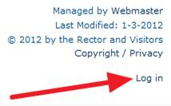
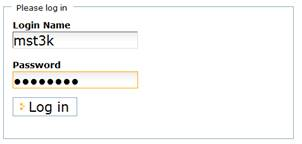
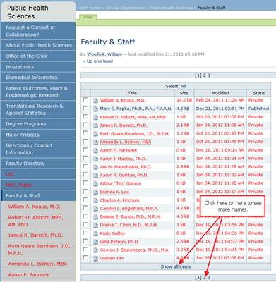

Editing your PHS Web page
Contents
As required by Health System/School of Medicine policy, the Department of Public Health Sciences maintains a departmental web site within the Content Management System (CMS) administered jointly by the School of Medicine Webmaster (Ray Nedzel) and the Web Development Center (Derrick Stone, Director). Within this site, the department provides, among other things, a page for each faculty and staff member to present information about their professional and academic activities. These personnel pages include basic contact information and division affiliation, as well as additional information described below (see the “Editing your page” section).
The intent of DPHS is to maintain a consistent layout across these pages, so we ask that you confine your information to requested subjects or areas in the order defined. You have great latitude within those areas to present a wide variety of information. How much or how little information your provide is up to you; just remember that this is the public face of DPHS and often the first presentation of your professional “face” to our web visitors.

- Enter your computing ID (i.e. mst3k) and your Health System account password

Note: if you do not know your Health System Account password, call the Health System Computing Help Desk at 4-5334 and ask them to re-set your LAN account password. You can tell them the password you wish to use. Make sure to tell them you are an academic employee on a non-managed system unless, of course, you aren’t!
(Note: there is an underscore character (_) between the words “folder_contents”)
- You should see a list of departmental personnel both in the main content area and on the left side menu. Find your name in either list and click on it.

Note: if you are using the list in the main content area of the page, you may need to click on one of the page links ( [1} 2 3) or click the “Show all items” link in order to see your name.
- If you see your page come up with four tabs above it, one of which says “Edit”, you are ready to begin editing.
- Click the Edit tab at the top of your web page.
- You should now see four editable areas labeled Title, Description, Body Text, and Change Note. Each of these areas is addressed below.
- Title – you may change this to some version of your name followed by your academic degrees and fellowship associations (i.e.: B.S., M.S., M.D., Ph.D., FACN, etc.). Please do not type anything else in this area.
- Description - please do not type anything in this area.
- Body Text – this is where you will do the majority of your content entry and editing. Below the “Body Text” label and above your content, you will see a bar of editing tools. The content management system offers three different editors which you may display at will (see the section below “Changing your page editor”).
- Change Note - you may enter something here or not as you wish.
- Below is the desired order of information on the page. We ask that you not change the order of information on your page, but rather fill in new information and change existing information where appropriate.
ORDER OF INFORMATION
(items in italic should be entered in the exact order shown; starting from Research interests and down, you may alter the order)
- Academic Rank, if any
- Administrative Title, if any
- PHS Division(s) to which you are appointed
- Main academic achievements: degree, institution, field of study, year degree awarded
- Mailing address
- Telephone number
- Fax number
- Email address
- Physical office location (Building, then room number)
- Expertise (short description)
- Research interests
- Teaching responsibilities (current or past, but mark them as such , please)
- Other information (any other academic activities you’d like to include)
- Publications list
- Links to more information (hyperlinks to other pages/information about you)
- Make any additions or corrections to the content of your page.
- Click the Save button at the bottom of the screen to save your changes and see the results.
The CMS offers three different editors for your use in making changes to your web page. The editors are embedded into the CMS and appear when you click the Edit tab at the top of your page. It is recommended that you work with the default editor but, if you find it’s features too limited or confusing for your purposes, you may elect to try a different editor.
- After logging into the content management system, click on your name in the lower right corner of the page.
- Click the “Edit” tab at the top of the page.
- About 2/3 of the way down the page is a place to choose “Content Editor”. There are currently three choices:
- Basic HTML textarea editor (simplest editor)
- Kupu (medium featured editor and the default editor – good for beginning users)
- TinyMCE (offers most features/tools – good for advanced users)
- If you have questions at any time, please contact Bill Woolfolk, DPHS Webmaster at 924-8276 or woolfolk@virginia.edu.
- If Bill is not available, please contact the Web Development Center Help Desk at 243-6702 or by email at wdc-support@virginia.edu.
Getting Training